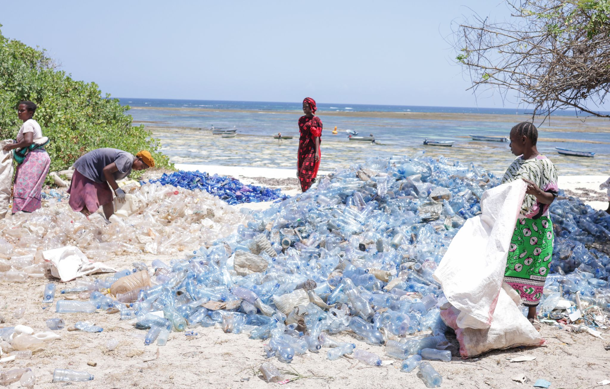
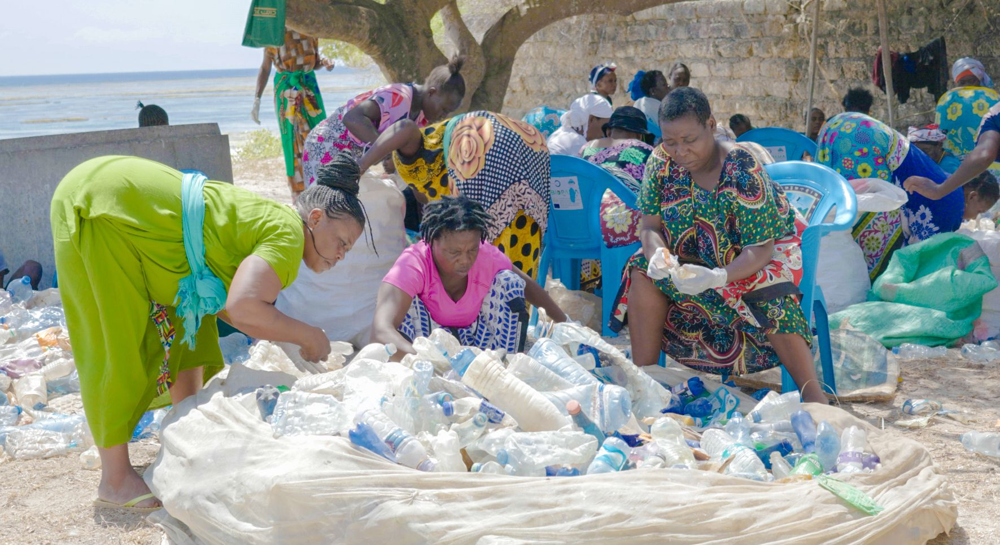

Our Story
Oceans Alive pre-history originates from 2003, when founders and the local artisanal traditional fisheries community took action to close an area from fishing and established a community coastal conservation area (CCA) locally known as a 'Tengefu'.
This area is recognized as a community driven marine protected area (MPA) or globally as a Locally Managed Marine Area (LMMA).
The founders experience resulted in a demand to share the knowledge such that in 2016, they created an NGO, called Oceans Alive (OA).
Strategic Aims
Act as a conduit to share the LMMA experience and tools, offering technical support to upscale to the 18 neighbouring fishing communities registered as Beach Management Units (BMU).

Coral Restoration

Impact
- 39 hectares rehabilitated
- 80 coral reef stars planted
- 30 members trained (50% women)
- 4,000 turtle hatchlings
Permaculture
Challenge
Kilifi coastal communities have lowest nutrition levels. Climate-smart solutions needed.
Methods
Sack gardens, vertical gardens, spiral gardens, compost making, demo farm

- Green leafy vegetables boost nutrition
- Supplemental income from surplus
- Water-efficient systems
- Toolkit published
Mama Karanga



Program Overview
- 2024: Program launched
- Beach & village clean-ups
- Eco-world partnership
- Women-led initiative
Economic Model
- VSLA savings scheme
- Pooled community investment
- Dual benefit: clean + income